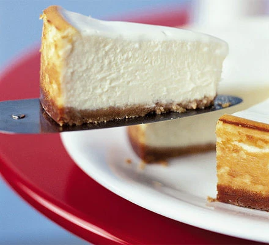

Baked Cheesecake

Mums Baked Cheesecake
A New York-style baked cheesecake is the epitome of indulgence,
offering a luxurious velvety texture that melts in your mouth with
every bite. Encased in a golden-brown, buttery graham cracker crust,
this cheesecake boasts a rich and creamy filling that's delicately
flavored with hints of vanilla or lemon zest. Baked to perfection,
its edges turn a tempting shade of golden while the center retains a
delightful jiggle. Best enjoyed chilled, this iconic dessert captivates
with its harmonious blend of flavors and textures, making it an
irresistible delight for cheesecake connoisseurs and dessert
lovers alike.
Ingredients
For the crust
- 85g butter, plus extra for tin.
- 140g digestive biscuits, made into fine crumbs (add 2 extra biscuits if your like a thicker base)
- 1 tbsp sugar, granulated or golden caster
For cheesecake filling
- 900g Philadelphia cheese, or other full-fat soft cheese
- 250g golden caster sugar
- 3 tbsp plain flour
- 1 1/2 vanilla extract
- finely grated zest of 1 lemon (about 2 tsp)
- 1 1/2 tsp lemon juice
- 3 large eggs, plus 1 yolk
- 284ml carton soured cream
For the soured cream topping
- 142ml carton soured cream
- 1 tbsp golden caster sugar
- 2 tsp lemon juice
Method
- Position an oven shelf in the middle of the oven. Heat the oven to 180C.
- Line the base of a 23cm springform cake tin by putting a square piece of
parchment paper or foil on top of the tin base and then clipping the side
on so the paper or foil is trapped and any excess stick out of the bottom.
- For the crust, melt 85g butter in a medium pan. Stir in 140g digestive
biscuit crumbs and 1 tsbp golden caster or granulated sugar so the mixture
is evenly moistened.
- Press the mixture into the bottom of the pan and bake for 10 minutes.
Cool on a wire rack while preparing the filling.
- For the filling, increase the oven temperature to fan 220C.
In a table top mixer fitted with the paddle attachment, beat 900g full-fat
soft cheese at medium-low speed until creamy, about 2 minutes.
- With the mixer on low, gradually add 250g golden caster sugar, then 3 tsbp
plain flour and a pinch of salt, scaping down the sides of the bowl and the
paddle twice.
- Swap the paddle attachment for the whisk. Continue by adding 1 1/2 tsp vinilla
extract, 2tsp lemon zest and 1 1/2tsp lemon juice. Whisk in 3 large eggs and 1 yolk,
one at a time, scraping the bowl and whisk at least twice.
- Stir a 284ml carton of soured cream until smooth, then measure 200ml
(just over 3/4 of a carton.) Continue on low speed as you add the measured soured cream (reserve the rest.)
Whisk to blend, but don't over-beat. The batter should be smooth, light and somewhat airy.
- Brush the sides of the springform tin with melted butter and put on a baking sheet.
Pour in the filling - if there are any lumps, sink them using a knife - the top
should be as smooth as possible. Bake for 10 minutes.
- Reduce oven temperature to 110C and bake for 45 minutes more.
If you gently shake the tin, the filling should have a slight wobble.
- Turn off the oven and open the oven door for a cheesecake that's
creamy in the centre, or leave it closed if you prefer a drier texture. Let cool in oven for 2 hours.
The cheesecake may get a slight crack on top as it cools.
- Combine the reserved soured cream with a 142ml carton soured cream, 1tbsp
golden caster sugar and 2tsp lemon juice for the topping. Spread over the cheesecake right to the edge.
Cover loosely with foil and refrigerate for at least 8 hours or overnight.
- Run a round-bladed knife around the sides of the tin to loosen any stuck edges.
Unlock the side, slide the cheesecake off the bottom of the tin onto a plate,
then slide the parchment paper out from underneath.
Home